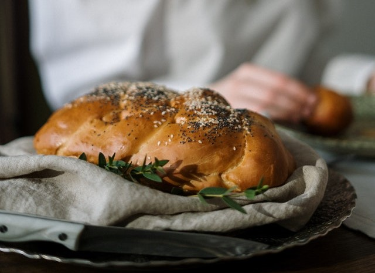
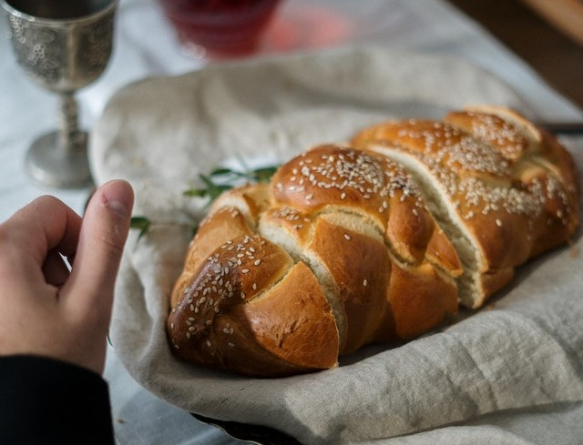

Our Delicious Challah Bread
We want to share with you our family traditional recipe for Challah Bread. Enjoy!
Bread It's Challah Bread
Ingredients
- 500 grams All Purpose Flour
- 1 tbsp dry yeast
- 2 tbsp sugar
- 1/4 cup olive oil
- 250 ml cup of water
- 1 tsp salt
Instructions
- Mix the flour, yeast, sugar and salt in a bowl.
- Add the oil and water and whisk to combine until a dough is formed.
- Knead the dough for 10 minutes.
- Place the dough in a covered bowl, let it rise for 1 and half to 2 hours or until doubled.
- Divide the dough to 3 equal pieces and roll into ropes.
- Shape the 3 pieces to a braid.
- Let the braid rise for 30 minutes. Minwhile, heat the oven to 180 degrees celsius.
- After 30 minutes, put the Challah in the oven for 35 to 40 minutes, until the Challah's color become golden.

